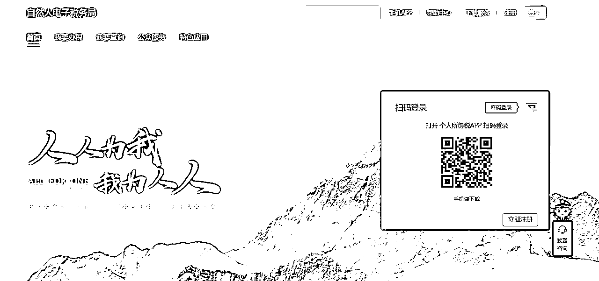
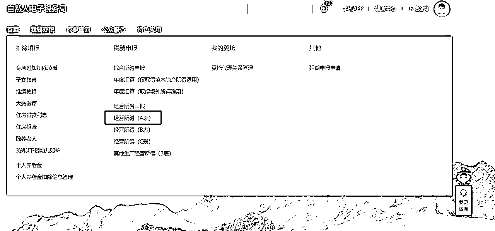
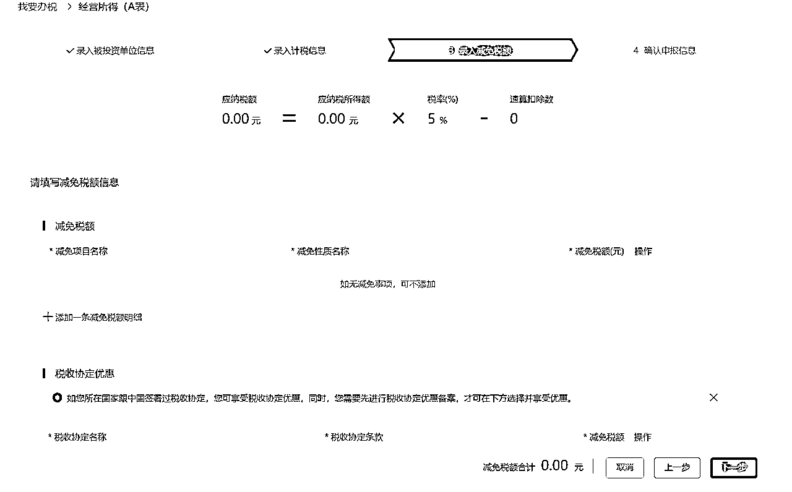

来源：https://dpfspobq67.feishu.cn/docx/EqSpdiyW9or5WsxSZDPcI4DRnsf
1.关于个体户的注册流程帖子，很多圈友都分享过，目前个体户注册，基本上都能够自主线上申请，通过本地市场监督管理局网站，可以完成注册；
2.大部分人目前对于个体户注册经营，存在一定的认知误区。注册个体户只是完成了开网店等场景下，资质认证要求的第一步，但对于业务经营来说，还需要进行税务申报，第二步对于大部分人来说，都没有完成，短期看不出影响，但是在注销的时候会比较麻烦，且容易被税务稽查要求补税；
3.个体户/企业注册等业务归市场监督管理局管辖，税务申报归税务局管辖。两个业务监管单位相对独立，所以从流程衔接上会有断层。过去的个体户个体单位较小，且两个部门数据未关联，大多数人的理解，不申报也没事，形成了思维惯性，有历史原因；
4.但当下谈税色变的金税四期，核心逻辑是税务局与工信部/中国人民银行/市场监督管理局进行数据打通，在监管层面生成个人和企业的画像，以大数据的方式进行税务治理，所以当下，个体户税务不申报，存在一定的涉税风险。
其实，对于个体户税务申报的流程，甚至比注册还简单，下面是个体户申报流程，全国范围适用。
1.登录自然人电子税务局网站：自然人电子税务局
2.选择我要办税：选择经营所得申报，经营所得（A表）每季度申报申报一次，经营所得（B表）每年度申报一次
3.属于个人名下的个体户纳税识别号，选择对应的时间，录入相关的计税信息；
4.系统自动生产纳税额，若没有收入，选择0即可；
5.申报完成，年度申报选择B表，流程类似。
1.查账征收，按照生产经营所得五级累进税率，5-35%，可以享受个体户的相关税务优惠政策：国家税务总局关于落实支持个体工商户发展个人所得税优惠政策有关事项的公告；
2.定期定额/核定征收，部分地区按照营业额的一定比例征收，例如当初薇娅在上海崇明岛注册的个独企业按照10%应税。但在这之后，核定政策逐渐取消，目前能够核定的地方不多。
1.个体户没有收入，自己也要进行税务申报；
2.如果经营流水较大，如实申报，且做好经营账户的资金管理和区分；
3.金税四期的影响和每个人有关，不要忽视，2025年，智慧税务全面落实，核心目标，业务-资金-发票-合同四流一致，更加智能高效进行税务监管。
申报流程附图如下：


